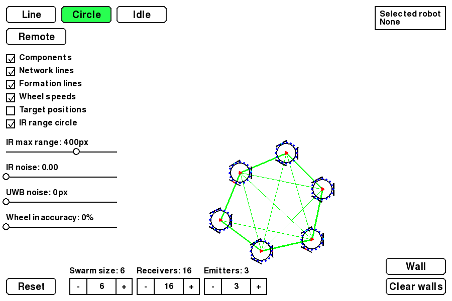

SwarmSim is a simulation of a decentralized robot swarm. The simulated robots are made to reflect my design for an ESP32 based swarm I plan on building. The robots communicate using a mix of IR, UWB and WiFi allowing them to organise themselves independently. The only external control is changing the formation via the controller, all computation is done internally.
The code is split into an Agent class,
which models a single robot's sensors and behaviour, a
Network class, which simulates how
signals travel between robots, and a
Controller, which stands in for whoever
is telling the swarm what formation to take.

All communication is done through a
Network class, that transfers signals and
messages between robots. There are three kinds of signals,
infrared (IR), Ultra-Wideband (UWB) and WiFi. IR and
UWB are used to determine the relative position to
other robots in real time. WiFi is used for more
complex communication. Currently, the simulation
doesn't take interference into account for any method.
This is used by robots to determine the relative angle to another robot. Each robot has an inner ring of IR LEDs, and an outer ring of IR receivers around their perimeter. The IR LEDs have a viewing angle of 120°. Their signals are blocked by walls and robots, and their strength decays based on how far they travel.
Every tick, robots broadcast a ping containing their ID. The decay allows them to compare the signal strength across their receivers to determine the ping's angle of origin.
This is used to find the distance to other robots. Each robot has a single UWB antenna that can transmit and receive signals. Unlike IR, UWB can pass through objects.
Every tick, the robots broadcast a ping
containing their ID over UWB. The Network
object then tells the receiving robot the distance.
WiFi messages are broadcast globally, and contain JSON data as opposed to the small 4 byte packets transmitted by IR and UWB. Due to it transmitting more data, WiFi communication doesn't happen in real time. WiFi communication can be triggered by certain events, but isn't required most of the time.
When the robots turn on, they attempt to establish a network. They broadcast a message containing who they can see, and every other robot takes turns doing the same. The last robot to speak is designated the temporary leader. At the end of the sequence they use the information gathered to create an internal graph representation of the swarm.
Each node in the graph represents a robot, and each edge represents a line of sight. The edges are weighted with the reported distance between the two robots. When the formation is changed by the controller, the robots use the graph to find the most efficient path for the requested formation, and the leader broadcasts the order of the path.
When searching for a path, the robots don't consider every possible route. Instead, they greedily chain each robot to its nearest unseen neighbour, then keep the shortest result across all possible starting points.
The simulation currently supports two formations, circles and lines. In both formations, the robots determine where they should be relative to their two neighbours. They then move towards their target position while maintaining a minimum distance from other robots.
In a line, internal robots target the midpoint between their two neighbours and the line straightens out over time. Usually, endpoint robots simply move inwards towards their only neighbour. If the two endpoints can see each other, they move apart to create space for the other robots, and accelerate the process.
In a circle, each robot determines where it should be relative to its two neighbours in a regular polygon. They also use the average direction of the rest of the swarm to determine where the center of the circle should be. This prevents them from collapsing inward.
Outside of a formation, robots simply keep a minimum distance from their neighbours, and that same separation behaviour runs underneath both formations to prevent collisions.
Each robot drives on a simulated three-wheel omnidirectional drivetrain. A desired velocity is converted into individual wheel speeds, which are capped and ramped up over time by an acceleration limit.
A control panel gives direct access to the swarm's parameters. Walls can be drawn to block IR line of sight, swarm size and sensor counts can be changed before a reset, checkboxes toggle the debug overlays seen in the screenshot, and clicking a robot selects it and shows its id, pose, state, and velocity in a panel in the corner.
The Line, Circle, and Idle buttons broadcast a formation command to the swarm via the controller. The Remote button switches the currently selected robot into manual control, allowing for repositioning and testing.
Sliders control IR noise, UWB noise, and wheel inaccuracy, letting the simulated sensors and motors become progressively less ideal to stress test the swarm's stability.